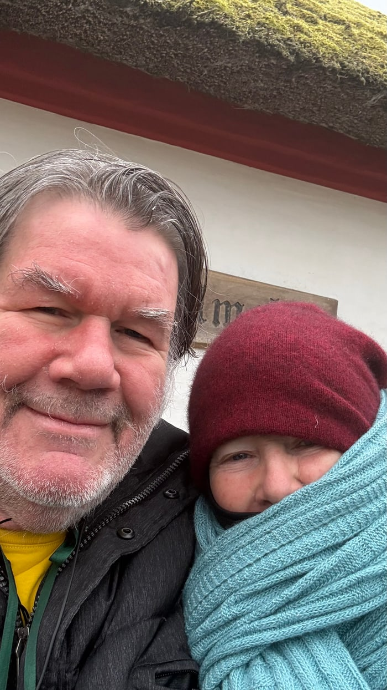

Tauchen Sie in die Feedback-Geschichten unserer DIY-Tools ein:

Gienowmethode
Wie Sie mit dem
Do It Yourself Gesundheitssystem Wunder für Körper, Geist und Seele erleben
und Ihr persönliches Freisein durch ganzheitliche Tools in wenigen Minuten auf Ihrem Smartphone selbstbestimmt entfalten
Stellen Sie sich vor Sie lassen Ihre Blockaden hinter sich
Frei von Ängsten, frei von Beschwerden.
Alle Begrenzungen lösen sich, die Ketten fallen ab, und Sie spüren wieder diese Leichtigkeit:
die Freiheit zu lieben, sich in Ihrer Haut wohlzufühlen und unbeschwerte Träume zu leben.
Was wäre, wenn Sie im Alltag wieder in diesem Zustand aufatmen können?
Das DIY-Gesundheitssystem löst diese Dysbalancen Ihres Organismus an der Wurzel:
1
Tool-Impulse über Berühren, Hören und Sehen sprechen in Unordnung geratene Zustände an
2
diese Informationen fügen den Organismus wie in einem Farbenspiel kohärent zusammen
3
die harmonische Ordnung zeigt sich in Fügungen, erweiterter Bewusstheit und gesteigertem Wohlbefinden
"
Ein bunter Strauß von Werkzeugen breitete sich vor mir aus, aus denen ich frei wählen konnte; und mein Gefühl zog mich immer in genau die Richtung, wo die Resonanz am größten war. Das fing mit SelfQ und Fingergesten an und setzte sich mit den BoosterGanen und Sussuu fort.
Julia
5000+ Kunden vertrauen uns
Welches Tool lässt Ihre Gesundheit erklingen?
Das fließt in Ihr Leben, wenn Sie die
Tore der Gienowmethode für sich öffnen
Weitere Tools für Ihre ganzheitliche Gesundheit

Wie die Gienowmethode ein Leben rettete
Durch eine schwere Erkrankung stand Dr. Peter Gienow dem Tod sehr nahe.
Trotz intensiver medizinischer Behandlung gab es zeitweise kaum noch therapeutische Möglichkeiten.
In dieser Phase entstand ein neuer Ansatz, aus dem später die BoosterGane entwickelt wurden.
Im weiteren Verlauf konnten schrittweise Veränderungen beobachtet werden, und seine Blutwerte stabilisierten sich wieder.
Heute kann er mit gesunder Milz ein aktives Leben führen.
5.000+
Tools für personalisierte Wirkung
35+
Jahre Erfahrung im medizinischen und alternativen Bereich
500.000+
Anwendungen der Gienow-Tools
Unsere FAQ zum DIY-Gesundheitssystem
der Gienowmethode
Hier finden Sie Antworten auf häufig gestelle Fragen zur Gienowmethode
Sind Sie ein freies Unternehmen?
Wo kann ich die Tools bestellen?
Welches Tool ist für meine Situation das beste?
In welcher Reihenfolge sollte ich mit den Tools arbeiten?